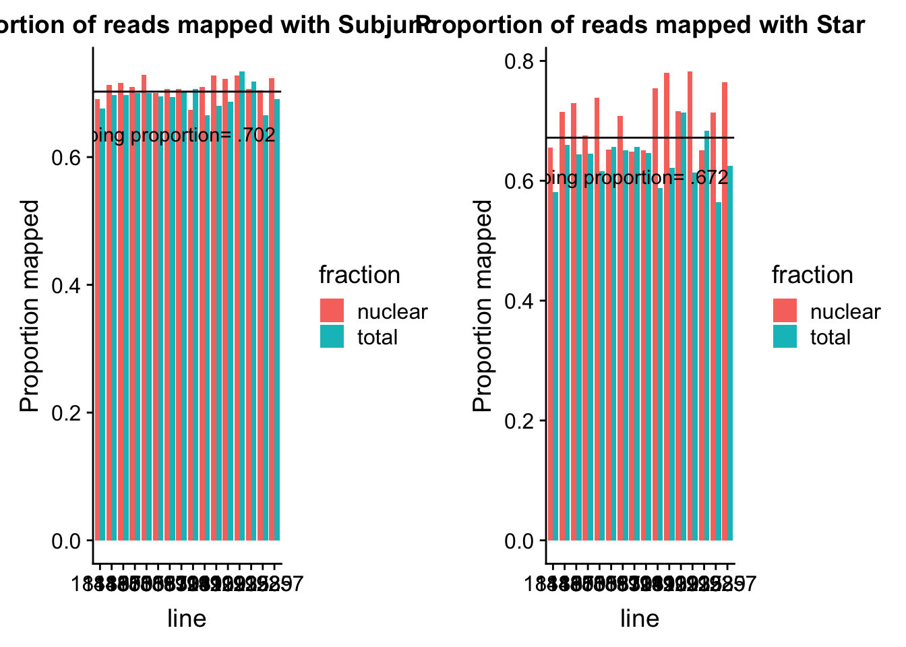

Last updated: 2018-06-01
workflowr checks: (Click a bullet for more information) ✔ R Markdown file: up-to-date
Great! Since the R Markdown file has been committed to the Git repository, you know the exact version of the code that produced these results.
✔ Environment: empty
Great job! The global environment was empty. Objects defined in the global environment can affect the analysis in your R Markdown file in unknown ways. For reproduciblity it’s best to always run the code in an empty environment.
✔ Seed:
set.seed(12345)
The command set.seed(12345) was run prior to running the code in the R Markdown file. Setting a seed ensures that any results that rely on randomness, e.g. subsampling or permutations, are reproducible.
✔ Session information: recorded
Great job! Recording the operating system, R version, and package versions is critical for reproducibility.
✔ Repository version: e4baa3b
wflow_publish or wflow_git_commit). workflowr only checks the R Markdown file, but you know if there are other scripts or data files that it depends on. Below is the status of the Git repository when the results were generated:
Ignored files:
Ignored: .Rhistory
Ignored: .Rproj.user/
Untracked files:
Untracked: data/gene_cov/
Untracked: data/reads_mapped_three_prime_seq.csv
Unstaged changes:
Modified: analysis/cov200bpwind.Rmd
Modified: code/Snakefile
| File | Version | Author | Date | Message |
|---|---|---|---|---|
| Rmd | e4baa3b | Briana Mittleman | 2018-06-01 | compare star and subj |
| html | 7126988 | Briana Mittleman | 2018-05-26 | Build site. |
| Rmd | 252c548 | Briana Mittleman | 2018-05-26 | plot prop mapping with subjunc |
| html | b5cdd59 | Briana Mittleman | 2018-05-26 | Build site. |
| Rmd | 9a49459 | Briana Mittleman | 2018-05-26 | start map qc analysis |
I will use this analysis to look at initial mapping QC for the two mappers I am using.
library(workflowr)Loading required package: rmarkdownThis is workflowr version 1.0.1
Run ?workflowr for help getting startedlibrary(ggplot2)
library(tidyr)
library(reshape2)Warning: package 'reshape2' was built under R version 3.4.3
Attaching package: 'reshape2'The following object is masked from 'package:tidyr':
smithslibrary(dplyr)
Attaching package: 'dplyr'The following objects are masked from 'package:stats':
filter, lagThe following objects are masked from 'package:base':
intersect, setdiff, setequal, unionlibrary(cowplot)Warning: package 'cowplot' was built under R version 3.4.3
Attaching package: 'cowplot'The following object is masked from 'package:ggplot2':
ggsaveI created a csv with the number of reads, mapped reads, and proportion of reads mapped per library.
subj_map= read.csv("../data/reads_mapped_three_prime_seq.csv", header=TRUE, stringsAsFactors = FALSE)
subj_map$line=as.factor(subj_map$line)
subj_map$fraction=as.factor(subj_map$fraction)Summaries for each number:
summary(subj_map$reads) Min. 1st Qu. Median Mean 3rd Qu. Max.
5103350 8030068 8776602 8670328 9341566 10931074 summary(subj_map$mapped) Min. 1st Qu. Median Mean 3rd Qu. Max.
3575191 5688940 6268228 6091626 6394260 7788593 summary(subj_map$prop_mapped) Min. 1st Qu. Median Mean 3rd Qu. Max.
0.6658 0.6932 0.7034 0.7025 0.7135 0.7343 Look at this graphically:
subj_melt=melt(subj_map, id.vars=c("line", "fraction"), measure.vars = c("reads", "mapped", "prop_mapped"))subj_prop_mapped= subj_melt %>% filter(variable=="prop_mapped")
subjplot=ggplot(subj_prop_mapped, aes(y=value, x=line, fill=fraction)) + geom_bar(stat="identity",position="dodge") + labs( title="Proportion of reads mapped with Subjunc") + ylab("Proportion mapped") + geom_hline(yintercept = mean(subj_prop_mapped$value)) + annotate("text",4, mean(subj_prop_mapped$value)- .1, vjust = -1, label = "Mean mapping proportion= .702")I added two lines to the csv file with the star map stats for each line.
star_map= read.csv("../data/reads_mapped_three_prime_seq.csv", header=TRUE, stringsAsFactors = FALSE)
star_map$line=as.factor(star_map$line)
star_map$fraction=as.factor(star_map$fraction)Summaries for each number:
summary(star_map$star_mapped) Min. 1st Qu. Median Mean 3rd Qu. Max.
3326506 5426888 5868012 5834521 6314488 7814874 summary(star_map$star_prop_mapped) Min. 1st Qu. Median Mean 3rd Qu. Max.
0.5648 0.6452 0.6558 0.6719 0.7144 0.7827 Look at this graphically:
star_melt=melt(star_map, id.vars=c("line", "fraction"), measure.vars = c("reads", "star_mapped", "star_prop_mapped"))star_prop_mapped= star_melt %>% filter(variable=="star_prop_mapped")
starplot=ggplot(star_prop_mapped, aes(y=value, x=line, fill=fraction)) + geom_bar(stat="identity",position="dodge") + labs( title="Proportion of reads mapped with Star") + ylab("Proportion mapped") + geom_hline(yintercept = mean(star_prop_mapped$value)) + annotate("text",4, mean(star_prop_mapped$value)- .1, vjust = -1, label = "Mean mapping proportion= .672")Compare the plots:
plot_grid(subjplot,starplot)
sessionInfo()R version 3.4.2 (2017-09-28)
Platform: x86_64-apple-darwin15.6.0 (64-bit)
Running under: macOS Sierra 10.12.6
Matrix products: default
BLAS: /Library/Frameworks/R.framework/Versions/3.4/Resources/lib/libRblas.0.dylib
LAPACK: /Library/Frameworks/R.framework/Versions/3.4/Resources/lib/libRlapack.dylib
locale:
[1] en_US.UTF-8/en_US.UTF-8/en_US.UTF-8/C/en_US.UTF-8/en_US.UTF-8
attached base packages:
[1] stats graphics grDevices utils datasets methods base
other attached packages:
[1] bindrcpp_0.2 cowplot_0.9.2 dplyr_0.7.4 reshape2_1.4.3
[5] tidyr_0.7.2 ggplot2_2.2.1 workflowr_1.0.1 rmarkdown_1.8.5
loaded via a namespace (and not attached):
[1] Rcpp_0.12.15 compiler_3.4.2 pillar_1.1.0
[4] git2r_0.21.0 plyr_1.8.4 bindr_0.1
[7] R.methodsS3_1.7.1 R.utils_2.6.0 tools_3.4.2
[10] digest_0.6.14 evaluate_0.10.1 tibble_1.4.2
[13] gtable_0.2.0 pkgconfig_2.0.1 rlang_0.1.6
[16] yaml_2.1.16 stringr_1.2.0 knitr_1.18
[19] rprojroot_1.3-2 grid_3.4.2 glue_1.2.0
[22] R6_2.2.2 purrr_0.2.4 magrittr_1.5
[25] whisker_0.3-2 backports_1.1.2 scales_0.5.0
[28] htmltools_0.3.6 assertthat_0.2.0 colorspace_1.3-2
[31] labeling_0.3 stringi_1.1.6 lazyeval_0.2.1
[34] munsell_0.4.3 R.oo_1.22.0
This reproducible R Markdown analysis was created with workflowr 1.0.1